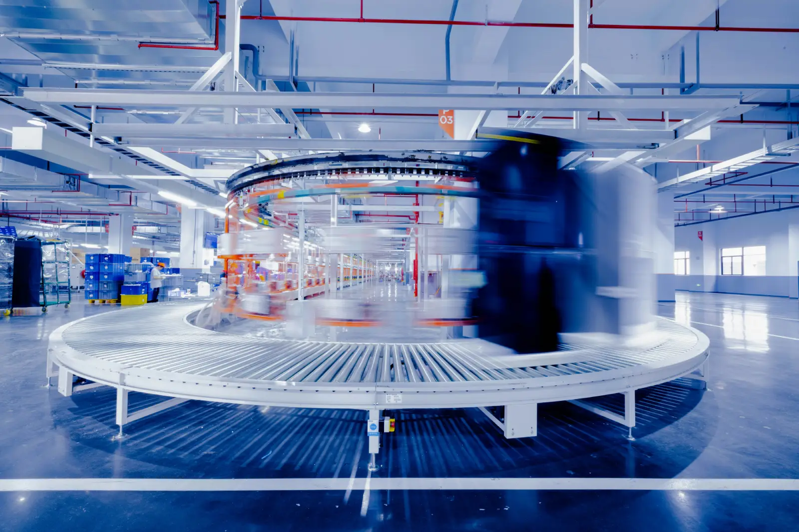

Design
We design systems that run clean in production — not just on paper.
- Throughput + flow modeling
- Integration-aware layouts
- Maintenance-first design

Design
System Design
Tailored solutions for complex environments. We design for throughput, integration, and ease of maintenance — not just aesthetics.
- Throughput + flow modeling
- Integration-aware layouts
- Maintenance-first design